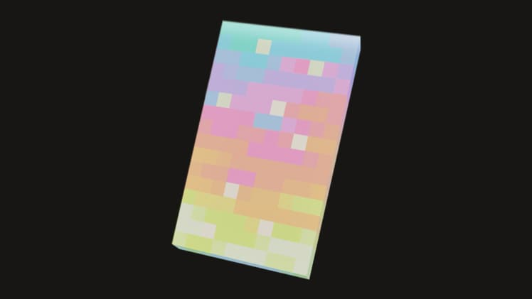
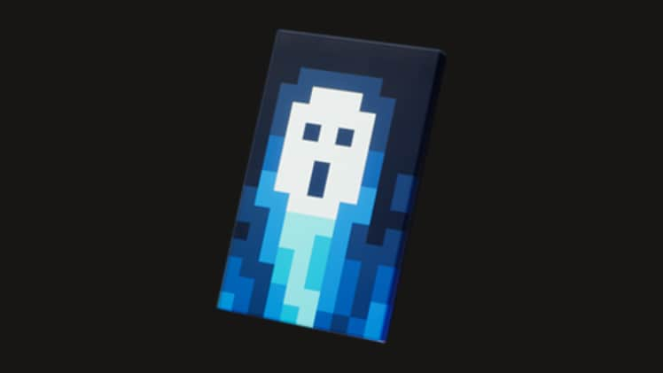
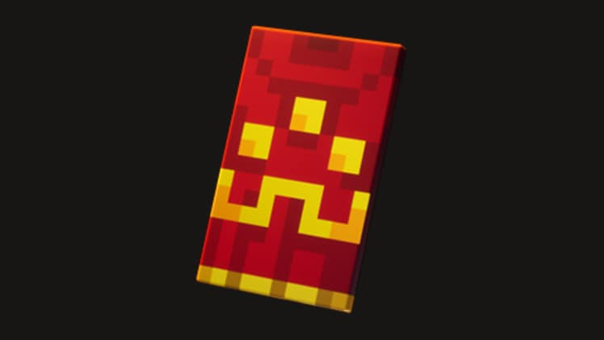
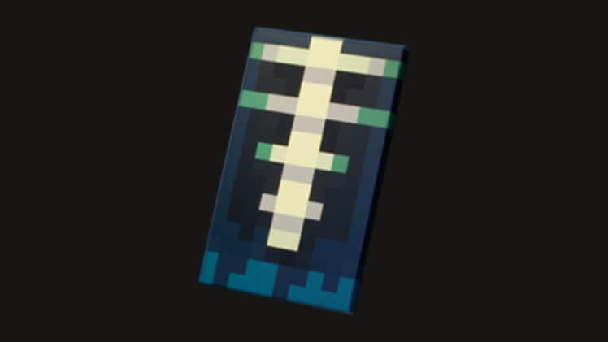

마인크래프트 한정판 망토 받는법, 오로라 케이프 얻는 조건부터 종료된 케이프 정리까지
마인크래프트 던전스2(Minecraft Dungeons II)가 2026년 9월 29일에 정식 출시됐는데요, 던전스2 소식을 챙기다 보니 이번에 한정판 망토(케이프)가 여러 종 함께 풀렸다는 얘기가 눈에 들어와서 저도 조건부터 하나하나 확인해봤습니다. 검색해보시면 예전에 받을 수 있었던 케이프 정보랑 지금도 받을 수 있는 케이프 정보가 뒤섞여서 나오는데요, 오늘은 지금 시점에 진짜로 챙길 수 있는 것부터 이미 끝나버린 것까지 확실하게 구분해서 정리해볼게요.
마인크래프트 한정판 망토, 지금도 진짜 받을 수 있어요?
결론부터 말씀드리면 지금(2026년 9월 30일 기준)도 실제로 획득 가능한 한정판 케이프가 있습니다. 마인크래프트 던전스2와 연계된 케이프 가운데 지금 받을 수 있는 건 세 가지고, 예전에 나왔던 케이프들은 대부분 기간이 끝나서 지금은 못 받아요.
'오로라 케이프'는 오늘부터 바로 시도해볼 수 있는 기간 한정 스트리밍 시청 이벤트고, '소울 케이프'는 던전스2 디럭스 에디션을 사면 바로 챙기는 방식이고, '히어로 케이프'는 1편을 안 해보셨어도 지금 1편을 플레이한 다음 12월 31일까지 2편에 로그인하면 받을 수 있어요. 반대로 프리오더 보너스였던 '트위스티드 케이프'나 커먼 케이프, 마이그레이터 케이프 같은 것들은 이미 기간이 끝나서 지금 아무리 조건을 맞춰도 못 받는다는 점을 먼저 짚고 갈게요.
오로라 케이프, 방송만 봐도 받을 수 있는 조건이에요
오로라 케이프는 트위치나 틱톡에서 던전스2 방송을 일정 시간만 시청하면 받을 수 있는 케이프입니다.
구체적으로는 리워드(드롭스)가 켜진 던전스2 방송을 트위치에서 총 15분 시청하거나, 틱톡의 게임 리워드 지원 스트림에서 3분만 시청하면 되는데요, 공식 기사 본문은 틱톡 3분과 트위치 15분을 함께 적고 있고 각주에는 '트위치 또는 틱톡'이라고 적혀 있어서 문구가 살짝 엇갈려요. 확실하게 받으시려면 두 조건을 다 채우는 편이 안전합니다. 시청 기간은 2026년 9월 29일 오전 9시(태평양시)부터 10월 14일 밤 11시 59분(태평양시)까지고, 조건을 채우면 트위치 인벤토리나 틱톡 알림으로 리딤 코드가 자동으로 뜹니다. 그 코드는 minecraft.net/redeem 에서 등록해야 하고, 등록 자체는 10월 31일까지 가능하다고 해요. 참고로 이 케이프는 마인크래프트 본편 전용이라 던전스2 안에서는 적용되지 않는다고 해요. 저도 이 글 쓰면서 짬 날 때 방송 하나 틀어놓고 시청 시간부터 채워볼까 싶네요.

지금 당장 시청 조건만 채워도 받을 수 있는 오로라 케이프예요
이미지 출처: minecraft.net 공식 기사 · 네이버 본문엔 받아서 재업로드 권장
소울 케이프는 디럭스 에디션 사면 바로 챙겨요
소울 케이프는 무료 이벤트가 아니라 마인크래프트 던전스2 디럭스 에디션을 구매하면 지급되는 케이프입니다.
던전스2가 9월 29일에 출시되면서 디럭스 에디션도 같이 상시 판매 중인데요, 이 에디션을 사면 게임 안에서 쓸 수 있는 추가 콘텐츠와 함께 소울 케이프도 따라옵니다. 무과금으로 받을 수 있는 오로라 케이프랑 다르게 구매가 필요한 방법이라는 점은 헷갈리지 않게 알아두시는 게 좋아요.

디럭스 에디션 구매자에게 지급되는 소울 케이프예요
이미지 출처: minecraft.net 공식 기사 · 네이버 본문엔 받아서 재업로드 권장
히어로 케이프는 던전스 1편부터 플레이하면 받아요
히어로 케이프는 마인크래프트 던전스 1편을 플레이한 다음, 같은 마이크로소프트 계정으로 던전스2에 로그인하면 받는 케이프입니다.
1편을 예전에 안 해보셨어도 괜찮아요. 지금 1편을 플레이한 다음 2026년 12월 31일까지 같은 계정으로 2편에 로그인하면 받을 수 있는 순차 조건이거든요. 다만 케이프를 받은 뒤에도 같은 마이크로소프트 계정으로 마인크래프트 자바·베드락에 로그인해야 본편에서 실제로 케이프가 풀린다는 점은 참고해두세요.

던전스 1편을 플레이하고 2편에 로그인하면 받는 히어로 케이프예요
이미지 출처: minecraft.net 공식 기사 · 네이버 본문엔 받아서 재업로드 권장
트위스티드 케이프를 비롯해서 이미 끝나버린 케이프들도 많아요
트위스티드 케이프는 던전스2 프리오더 보너스였는데, 프리오더 기간 자체가 9월 28일에 이미 끝나서 지금은 받을 방법이 없습니다.
프리오더 기간이 2026년 6월 6일부터 9월 28일까지였는데요, 던전스2가 출시된 게 9월 29일이니까 딱 하루 차이로 끝나버린 셈이에요. 트위스티드 케이프는 히어로 스킨 2종이랑 '트위스티드 치킨' 펫까지 같이 주는 알찬 구성이었는데, 지금 검색해서 조건 채우려고 하셔도 이미 마감이라 못 챙깁니다. 참고로 프리오더로 받은 분들도 같은 마이크로소프트 계정으로 마인크래프트 자바·베드락에 로그인해야 본편에서 실제로 케이프가 풀리는 방식이었어요. 이거 말고도 예전에 풀렸다가 지금은 끝난 케이프가 꽤 많은데, 표로 한번에 정리해볼게요.

프리오더 보너스였던 트위스티드 케이프, 지금은 이미 종료됐어요
이미지 출처: minecraft.net 공식 기사 · 네이버 본문엔 받아서 재업로드 권장
| 케이프 | 획득 조건이었던 것 | 기간 |
|---|---|---|
| 커먼 케이프 | 베드락 에디션에 마이크로소프트 계정으로 로그인 | 2025.5.6~2026.5.5 종료 |
| 마이그레이터 케이프 | 모장 계정→마이크로소프트 계정 마이그레이션 | ~2023.9.19 종료, 재개 여부 미확정 |
| 마인크래프트 무비 케이프 3종(홈·메너스·연(Yearn)) | 트위치·틱톡 방송 시청, 베드락 이벤트 서버 퀘스트 | 2025.3~4 종료 |
| 트위치콘 2026 케이프 2종(크래프터·빌더) | 현장 참가, 온라인 시청 | 2026.5~6 종료 |
| MCC×15주년 케이프 | 미니게임 참여+챌린지 15개 완료 | 2024.7~8 종료 |
| 체리블라섬 케이프 | 2023년 몹보트 투표 참여 | 종료, 재개 여부 미확정 |
위 표에 정리한 종료 케이프들의 기간·조건은 minecraft.net 공식 발표와 minecraft.wiki 커뮤니티 자료를 함께 참고해서 정리했어요. 참고로 '커럽티드 크리퍼 케이프'와 '스페셜 케이프'라는 이름도 공식 기사에 언급되긴 했는데, 둘 다 아직 구체적인 획득 조건이나 기간은 공개되지 않았어요. 앞으로 여러 이벤트에 등장할 예정이라고만 나와 있어서, 저도 공식 공지가 더 나오면 그때 다시 정리해볼게요.
받은 케이프, 자바냐 베드락이냐에 따라 장착하는 법이 달라요
케이프 장착 방법은 자바 에디션과 베드락 에디션이 서로 다릅니다.
자바 에디션은 minecraft.net에 로그인한 다음 우측 상단 계정명에서 프로필로 들어가시면 됩니다. 프로필 페이지 맨 아래로 스크롤하면 'Change Your Cape' 섹션이 나오는데, 여기서 원하는 케이프를 클릭만 하면 바로 적용됩니다. 런처의 스킨 관리 메뉴에서도 똑같이 바꿀 수 있어요. 베드락 에디션은 게임을 실행한 뒤 '드레싱룸(탈의실)'으로 이동해서, 좌측 메뉴 중 'Capes' 탭을 선택하고 원하는 케이프를 고른 다음 'Equip'을 눌러주시면 됩니다.
자바 에디션은 프로필 페이지 하단에서 케이프를 바꿔요
베드락 에디션은 드레싱룸의 Capes 탭에서 골라요
자주 묻는 질문
Q. 팬 케이프(Pan Cape)도 한정판인가요?
아니요, 팬 케이프는 모든 플레이어에게 자동으로 지급되는 상시 케이프라 마감일이 따로 없어요. 베드락 에디션은 1.16.0 버전부터, 자바 에디션은 2025년 5월 8일부터 전원 지급으로 확대됐다고 합니다. 한정판이 아니라서 이 글에서 다룬 케이프들과는 성격이 좀 달라요.
Q. 모장 케이프나 번역가 케이프는 신청하면 받을 수 있나요?
이런 케이프들은 신청으로 받는 구조가 아니에요. 모장 케이프는 모장 스튜디오 직원 전용이고, 트랜스레이터 케이프는 마인크래프트 번역 프로젝트에서 두드러진 기여를 한 교정자에게 수여되는 거라, 일반 플레이어가 셀프서비스로 받을 수 있는 경로 자체가 없답니다.
Q. 종료된 케이프들, 나중에 다시 풀릴 가능성은 없나요?
마이그레이터 케이프나 체리블라섬 케이프처럼 공식적으로 재개 계획이 발표된 적이 없어서 재개 여부가 미확정인 것들도 있고, 나머지 종료 케이프들도 재개 여부가 따로 공지되지 않았어요. 재발급된다는 공식 소식이 나오기 전까지는 지금은 못 받는다고 보시는 게 맞죠.
Q. 마인크래프트 챔피언십(MCC) 시즌6 하면 새 케이프를 주나요?
이 부분은 확인이 안 됐어요. 2024년 15주년 기념 때는 미니게임 참여로 케이프를 준 적이 있지만, 2026년 2월에 시작한 시즌6이 같은 방식으로 새 케이프를 주는지는 공식적으로 확인되지 않았습니다. 괜히 없는 정보로 기대하시게 하고 싶지 않아서 확인된 것만 말씀드릴게요.
마인크래프트 한정판 망토 정리
정리하면, 지금 시점엔 오로라 케이프(시청)·소울 케이프(구매)·히어로 케이프(1편 플레이 후 2편 로그인) 이 세 가지가 실제로 챙길 수 있는 케이프예요. 트위스티드 케이프를 비롯한 나머지들은 이미 끝나버렸으니 검색하시다가 조건 맞춰보려고 시간 쓰실 필요는 없거든요. 저는 일단 오로라 케이프부터 방송 시청 시간 채워볼 생각인데, 다시 짚어보면 기간 지나기 전에 여러분도 한 번씩 챙겨보시면 좋겠어요.
✔ 마인크래프트 같이 보기 좋은 내용
· 마인크래프트 던전스2 사전구매보상 받는법 총정리, 출시일 D-6 카운트다운까지
참고한 곳
· Minecraft Dungeons II Capes and Promos (minecraft.net)
· Minecraft Dungeons II gameplay reveal and date announce (minecraft.net)